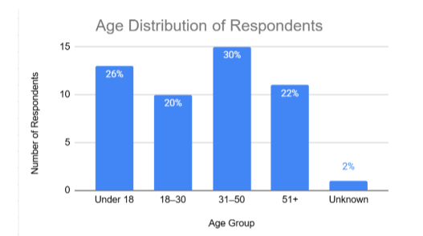
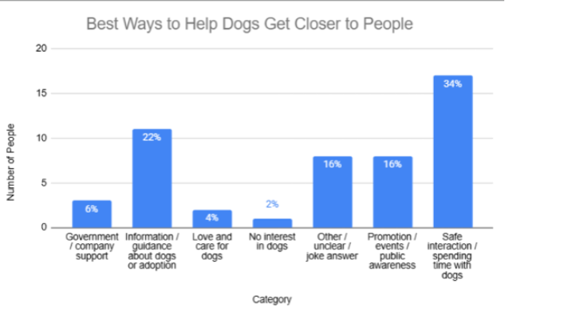

Lucas Teichert
Lucas Teichert
Data
1.Characteristics of the Sample
This section describes the people who answered our street survey. We did the survey
near Da’an Junior High School and the nearby park. This sample overview helps the
reader understand who participated before looking at the survey results.. Gender
1.1 Total Sample Size
A total of 50 people completed our street survey. This number is the total sample size
for the results. Since there were 50 respondents, each person represented 2% of the
sample. This allows the results to be shown with both numbers and percentages.
1.2 Gender
Gender was not collected in this survey. Because of this, gender is not included in the sample overview. This is one limitation of the survey because the results cannot be compared by gender.
1.3 Age Distribution
Table 1 and Figure 1 show the age groups of the people who answered the survey.

Figure 1. Age Distribution of Respondents

The age distribution shows that the largest group was 31–50, with 15 respondents, or 30% of the sample. The Under 18 group had 13 respondents, or 26%. The 51+ group had 11 respondents, or 22%, and the 18–30 group had 10 respondents, or 20%. One respondent was listed as Unknown, which was 2%. Overall, the sample included different age groups, but the 31–50 group was the largest. The bar chart helps compare the groups clearly because the bars are side by side. The percentages also help show each group’s share of the whole sample.
2.Sample analysisx
Q1
The exact question was Have you been to a place recently where you
can meet dogs, like a shelter, farm, zoo, or pet cafe? Yes or No.The
main goal was to find out if people had recently visited a place where
they could meet dogs in real life.
This was a single-choice question because each person could only
choose one answer, Yes or No.
This question collected categorical data because the answers were
categories, not numbers.
This was not an open-ended question, so I did not need to group
written answers.

I used a bar chart because it clearly compares the number of people
who answered Yes and No.
The most popular options were tied. Yes and No were both chosen by
25 people, which was 50% for each answer.
There was no least popular option because Yes and No had the same
number of responses.
One noticeable pattern was that the result was exactly split. Half of the
people answered Yes, and the other half answered No.
Q2
The exact question was What would be the biggest difficulty for you if
you wanted to meet dogs for adoption face to face? The main goal was
to find out what problems may stop people from meeting adoptable dogs in person.
This was an open-ended question because people could write their
own answers.
This question collected categorical data because I grouped the written
answers into different categories.
I analyzed this open-ended question by reading the answers and
grouping similar ideas together. For example, answers about being
scared of dogs or getting bitten were grouped as Safety / fear of dogs.

I used a bar chart because it clearly compares the number of people who answered Yes and
No.
The most popular options were tied. Yes and No were both chosen by 25 people, which
was 50%
for each answer.
There was no least popular option because Yes and No had the same number of
responses.
One noticeable pattern was that the result was exactly split. Half of the people
answered
Yes, and the other half answered No.
Q3
The exact question was From this list, what do you think is the best
way for helping dogs in need of adoption get noticed? Choose 1 to 3
answers. The choices were school activities, visits to places like
institutions of care, dog cafes and restaurants, partnerships with
shopping spaces, dogs visiting public areas, and veterinarian hospitals.
The main goal was to find out which places or methods people thought
would help adoptable dogs get more attention.
This was a multiple-selection question because people could choose 1
to 3 answers.
This question collected categorical data because the answers were
different methods or places.
This was not an open-ended question, so I did not need to group
written answers.

I used a bar chart because it clearly compares which methods were
selected more often.
The most popular option was Dog cafes and restaurants. 32 people
selected this option, which was 64%.
The least popular option was Veterinarian hospitals. 3 people selected
this option, which was 6%.
One noticeable pattern was that people preferred places where dogs
could meet people in public or everyday settings. Dog cafes and
restaurants, school activities, public areas, and shopping spaces were
all popular choices.
Q4
The exact question was If you wanted to go somewhere to see dogs for
adoption, what would be the easiest way for you to travel? Choose 2
answers. The choices were drive myself, public transport, bike,
walking, taxi, pick-up service, and other. The main goal was to find out
which transportation choices people thought were easiest for visiting
adoptable dogs.
This was a multiple-selection question because people could choose 2
answers.
This question collected categorical data because the answers were
different transportation choices.
This was not an open-ended question, so I did not need to group
written answers.

I used a bar chart because it clearly compares which transportation
choices were selected more often.
The most popular option was Public transport. 32 people selected this
option, which was 64%.
The least popular option was Other. 2 people selected this option,
which was 4%.
One noticeable pattern was that public transport and taxi were the top
choices. This shows that many people may need easy transportation
instead of driving themselves to see adoptable dogs.
Q5
The exact question was What do you think is the best way to help dogs
get closer to people? The main goal was to collect people’s own ideas about how dogs can
have more chances to meet people.
This was an open-ended question because people could write their
own answers.
This question collected categorical data because I grouped the written
answers into different idea categories.
I analyzed this open-ended question by reading the answers and
grouping similar ideas together. For example, answers about spending
time with dogs or meeting dogs safely were grouped as Safe interaction /spending time with dogs.

I used a bar chart because it clearly compares the different idea categories.The most popular category was Safe interaction / spending time with dogs. 17 people gave this type of answer, which was 34%. The least popular category was No interest in dogs. 1 person gave this type of answer, which was 2%. One noticeable pattern was that many people wanted safe and direct ways to spend time with dogs. Information and public events were also common ideas, so people may need both safe interaction and clear guidance.